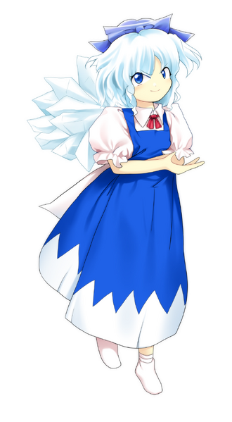

← Вернуться на главную ← Предыдущий Следующий →
О персонажеЧирно — ребячливая и невероятно самоуверенная ледяная фея, обитающая на Туманном озере. Как и все феи, она является воплощением самой природы (в её случае — холода) и обладает истинным бессмертием: даже если её уничтожить, она вскоре возродится вновь, пока существует сама природа. Она искренне считает себя «сильнейшей» в Генсокё и постоянно совершает безрассудные поступки, бросая вызов противникам, которые намного сильнее её. В руководстве к Phantasmagoria of Flower View ZUN в шутку отметил её цифрой ⑨ с подписью «дурочка», что породило один из главных мемов серии. Несмотря на свою простодушность, Чирно умнее большинства сородичей: она умеет читать, считать (даже дроби) и способна вовремя почуять смертельную опасность. В свободное время она обожает замораживать лягушек, чтобы затем наблюдать, как те оттаивают и оживают, — правда, примерно в трети случаев фокус заканчивается для лягушки печально. А во время инцидента в Hidden Star in Four Seasons она даже обрела тёмный загар и временный прилив сил, впитав избыточную жизненную энергию лета, которую втайне усилила Окина Матара. Способности
|
 |